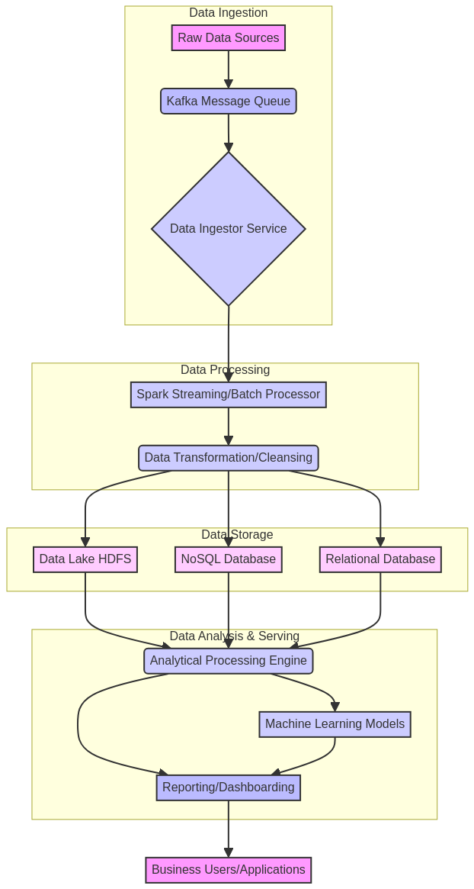
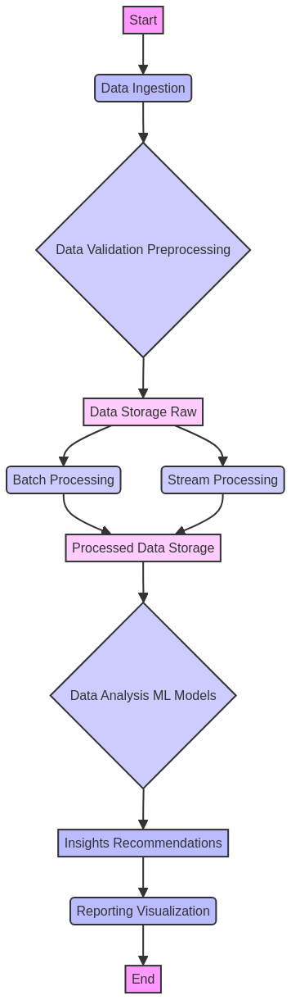

Um sistema de processamento de Big Data de nível empresarial
This project, Big-Data-Processing-Engine, developed by Gabriel Demetrios Lafis, is an enterprise-grade system designed for efficient processing and analysis of large datasets. It leverages modern Java features and concurrent programming to handle data records, generate insightful summaries, and provide actionable recommendations.
Este projeto, Big-Data-Processing-Engine, desenvolvido por Gabriel Demetrios Lafis, é um sistema de nível empresarial projetado para o processamento e análise eficientes de grandes conjuntos de dados. Ele aproveita os recursos modernos do Java e a programação concorrente para lidar com registros de dados, gerar resumos perspicazes e fornecer recomendações acionáveis.
ExecutorService for parallel data processing, ensuring high throughput. / Utiliza ExecutorService para processamento paralelo de dados, garantindo alta taxa de transferência.The system follows a modular architecture, as illustrated below: / O sistema segue uma arquitetura modular, conforme ilustrado abaixo:
The data processing workflow involves several stages, from ingestion to final reporting: / O fluxo de trabalho de processamento de dados envolve várias etapas, desde a ingestão até o relatório final:
git clone https://github.com/GabrielDemetriosLafis/Big-Data-Processing-Engine.git
cd Big-Data-Processing-Enginemvn clean installjava -jar target/big-data-processing-engine-1.0.0-jar-with-dependencies.jarThis will initialize the system with sample data, process it, and print the analysis results to the console. / Isso inicializará o sistema com dados de exemplo, os processará e imprimirá os resultados da análise no console.